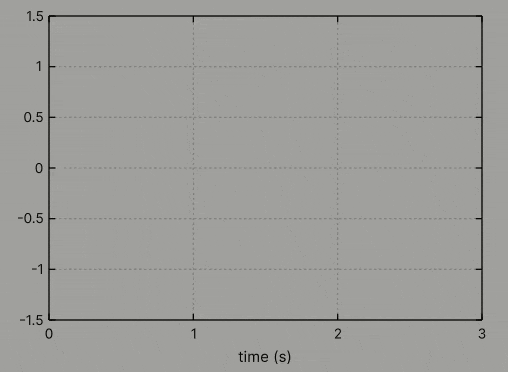

Signal demo
Below is a simple demo showing how to draw a signal over time. The chosen signal is a simple sine function with additional noise. The signal is displayed within a moving window of length 3 seconds and is sampled at a frequency of 60 Hz. The data buffer stores between 900 and 1800 of the most recent samples.

private Graph graph;
private List<float2> data = new();
private void Start()
{
graph = new()
{
XAxis = { Label = "time (s)" },
YAxis = { Min = -1.5f, Max = +1.5f },
style = { width = 400, height = 300 }
};
graph.PlotWithLines(data, theme: new() { LineWidth = 3 } );
}
private float t = 0;
private float freq = 60;
private float reset = float.MaxValue;
private float window = 3;
private int maxcount => (int)(10 * window * freq);
private void Update()
{
var dt = Time.deltaTime;
t += dt;
reset += dt;
if (reset < 1 / freq)
{
return;
}
reset = 0;
var fx = math.sin(2 * t) + 0.5f * noise.snoise(new float2(3 * t, 0));
data.Add(new(t, fx));
graph.XAxis.Min = math.max(t - window, 0);
graph.XAxis.Max = math.max(t, window);
graph.Replot();
if (data.Count > maxcount)
{
data.RemoveRange(0, maxcount / 2);
}
}
Warning
Remember that this Graph must be included in a UI Document or a corresponding component editor to render correctly.